Version Up
팀에서 사용하는 Spring boot version up (2.1.6 -> 2.2.2)을 하면서 호환성을 맞추기 위해
spring-cloud-stream-binder-kafka-streams 라이브러리도 같이 버전업을 하게 되었습니다. (2.2.0 -> 2.3.4)
그 과정에서 발생한 value Serde 이슈에 대한 내용을 얘기해 보고자 합니다.
Kafka Streams란?
kafka streams는 kafka streams api를 사용하여, 지속적으로 흘러들어오는 데이터에 대한 분석, 처리를 위한 클라이언트 라이브러리 입니다.
간단하게는 어떤 Topic으로 들어오는 데이터를 Consume하여, streams api를 통해 처리 후
다른 Topic으로 전송(Producing) 하거나 끝내는 행위를 하게 됩니다.
Spring에서 사용하기
Springboot에서 kafka streams를 사용하게 되면 @StreamListener annotation을 사용해서 로직을 구현하게 됩니다.
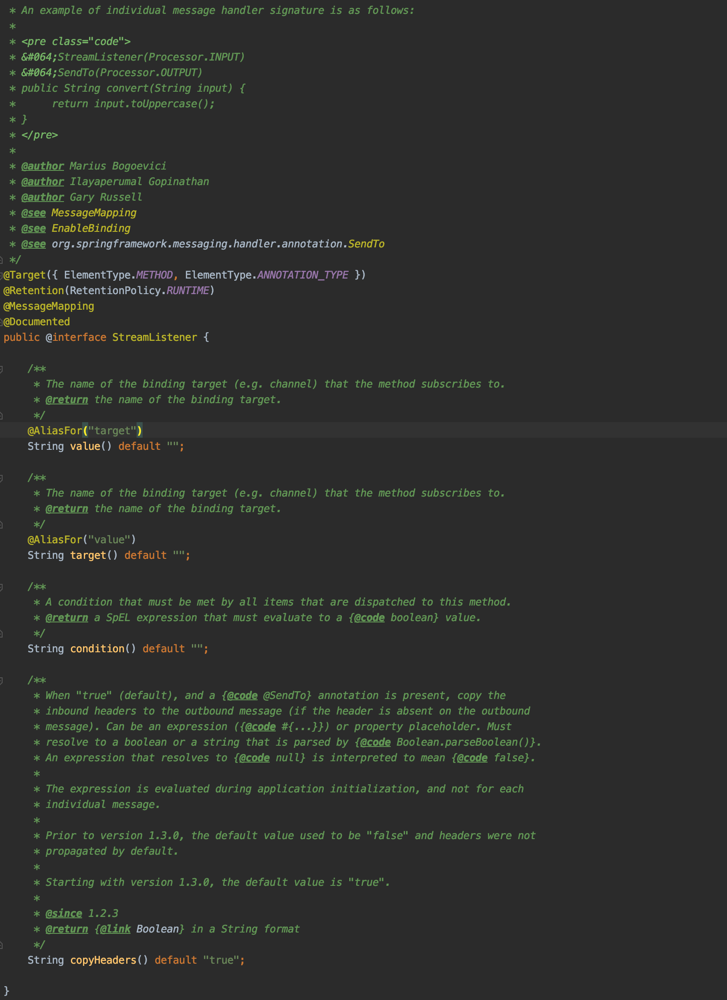
1 |
|
간단하게 Message를 처리하는 kafka streams code를 작성해 보았습니다message-topic토픽으로 들어오는 메세지를 consume하여 sendFlag 처리를 하고 next-topic으로 다시 producing하는 코드 입니다.
기본적으로 kafka에서 쓰이는 content-type은 application/json이기 때문에 value fotmat을 Json으로 사용하고 있습니다.
그렇다면 kafka에는 분명 value가 json string일텐데, @StreamListener 메서드에서는 어떻게 json -> Pojo로 Deserializing 해주었을까요?
이걸 찾아보기 전까지는 막연하게 default.value.serde (Serializier/DeSerializer)가 해주는줄 알았습니다. (반은 맞고 반은 아님)
하지만 이번 version up 이슈를 통해 자세하게 알아보았고, 그 내용을 적어보았습니다.
spring-cloud-stream-binder-kafka-streams 2.2.0
@StreamListener annoataion은 StreamListenerAnnotationPostProcessor class에 의해 annotation processing 작업이 이루어집니다.
그 내부에서 StreamListenerSetupMethodOrchestrator class에 의해 processing이 이루어지며,
정확히는 KafkaStreamsStreamListenerSetupMethodOrchestrator 입니다.
살펴볼 코드의 순서는 이렇습니다.
orchestrateStreamListenerSetupMethodadaptAndRetrieveInboundArgumentskeySerde, valueSerde설정하는 부분valueSerde 설정(과연 valueSerde는 뭐를 쓰고 있었을까?)if (parameterType.isAssignableFrom(KStream.class))getkStream(inboundName, spec, bindingProperties, streamsBuilder, keySerde, valueServde, autoOffsetReset)streamListenerParameterAdapter.adaptdeserializeOnInboundconvertAndSetMessageApplicationJsonMessageMarshallingConverter.convertFromInternal
3. keySerde, valueSerde 설정
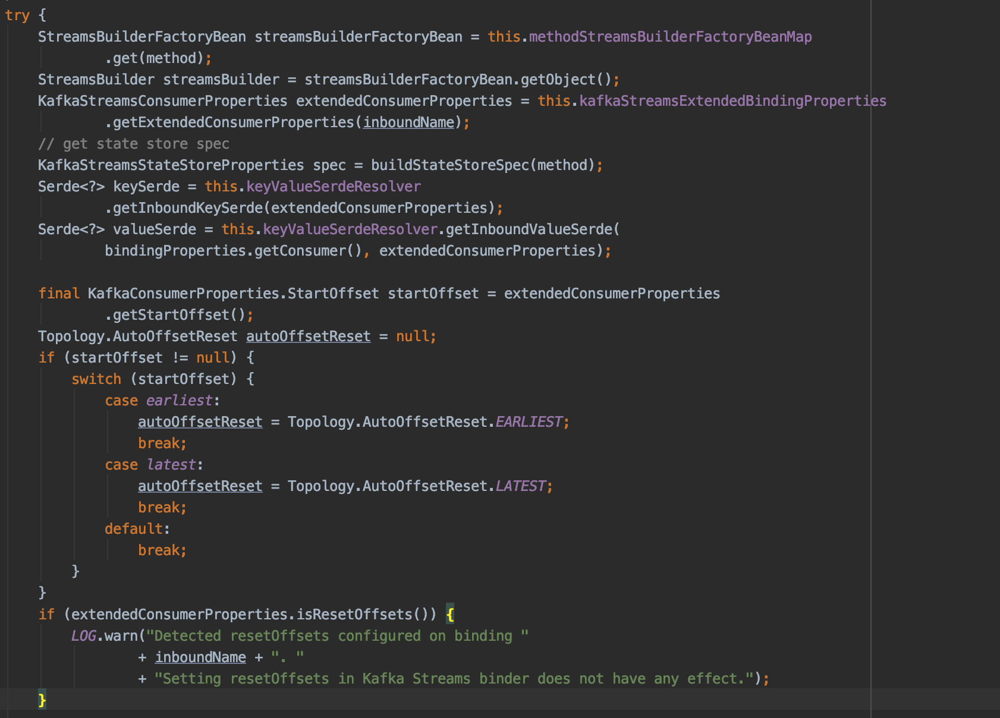
6번째 줄부터 keySerde, valueSerde를 설정하는 부분을 볼 수 있습니다.
4. valueSerde 설정
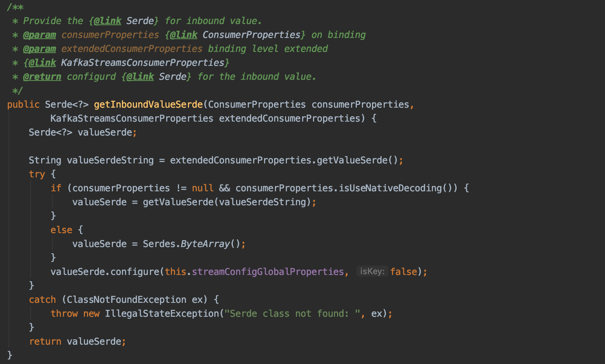
중요!한 valueSerde 설정 부분입니다.
try 블록 첫번째 if문을 보면 consumerProperties에 useNativeDecoding 속성이 true인 경우에만 getValueSerde() 메서드를 호출하여 default.value.serde가 적용되게 됩니다.
그게 아니라면 ByteArray Serde가 적용됩니다.
1 | /** |
default는 false이기 때문에 기본적으로 ByteArray Serde가 적용됩니다.
(그것도 모르고 default.value.serde에 명시한 Serde가 적용되는 줄 알았습니다.)
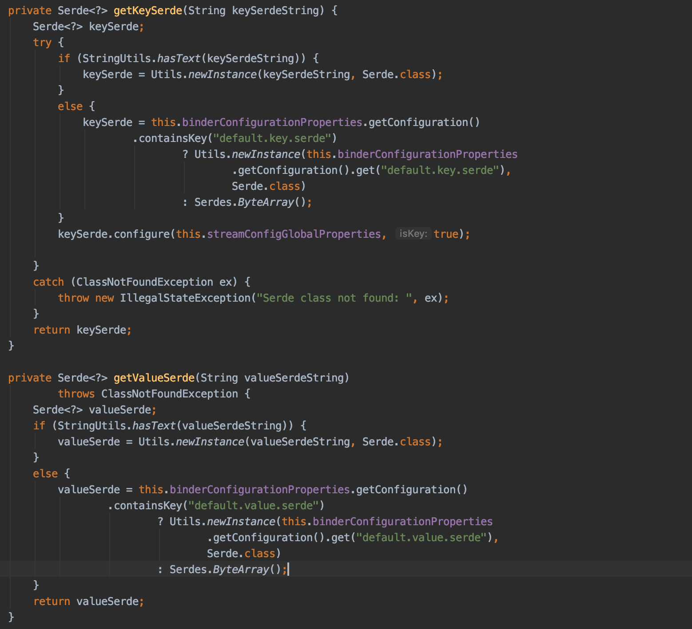
5. if (parameterType.isAssignableFrom(KStream.class))
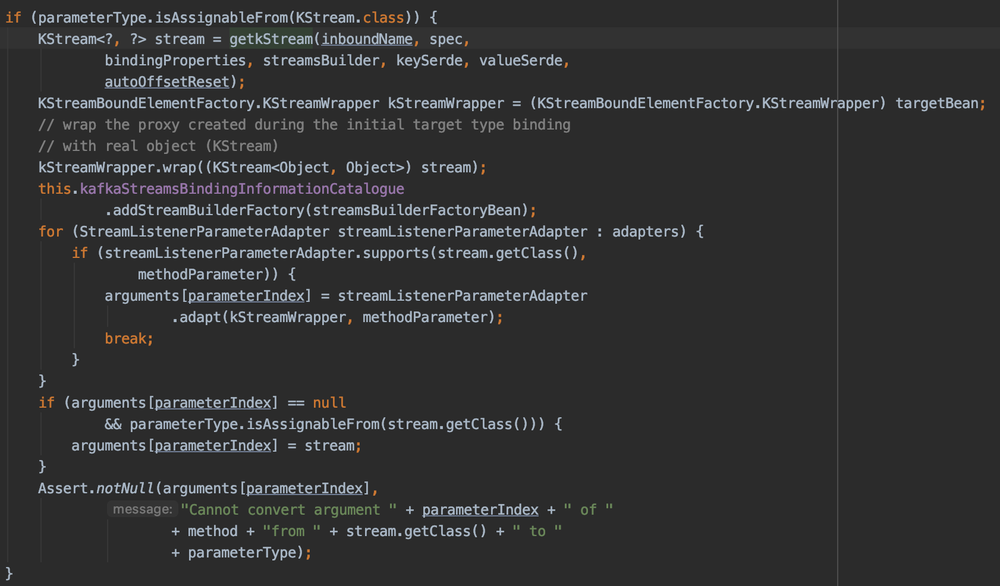
여기서 중요하게 봐야 할 부분은 두군데 입니다.
- getkStream()
- streamListenerParameterAdapter.adapt(kStreamWrapper, methodParameter)
6. getkStream()
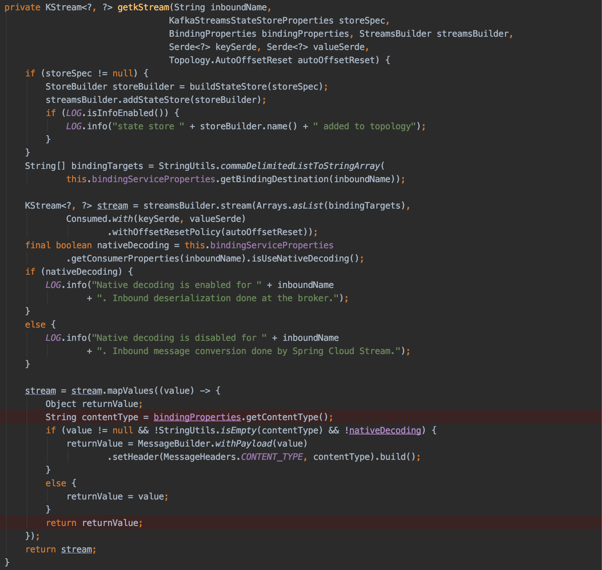
마지막의 stream.mapValues 쪽을 잘봐야 합니다.
여기에도 nativeDecoding에 대한 조건이 있습니다.
contentType은 default를 사용하고 있기 때문에 application/json이 적용됩니다.
stream.mapValues내의 함수는 runtime에서 실행되는 함수이기 때문에 kafka streams에서 message를 consume하고 실행하는 함수입니다.
정리해보면..
- contentType =
application/json - useNativeDecoding =
false
이므로
1 | returnValue = MessageBuilder.withPayload(value) |
kafka에서 처리하는 Message Type으로 처리가 되게 됩니다.
7. streamListenerParameterAdapter.adapt
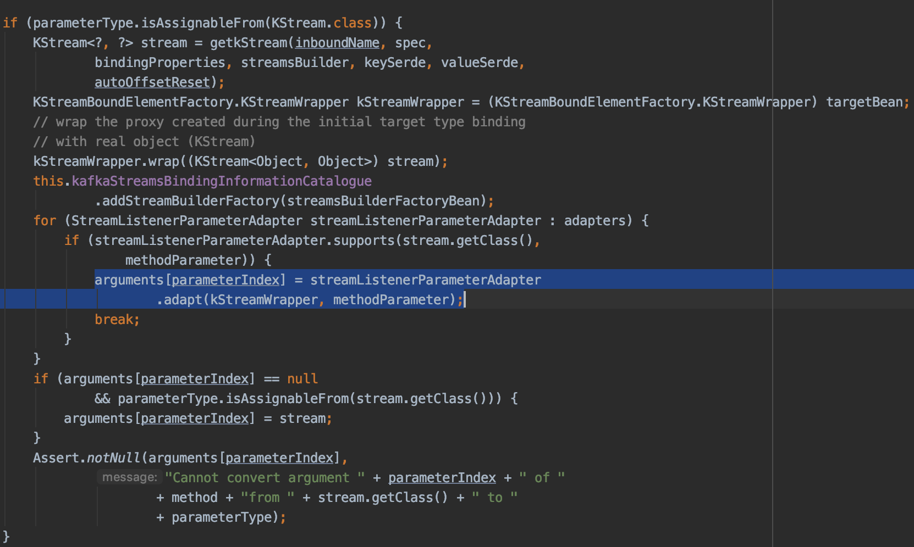
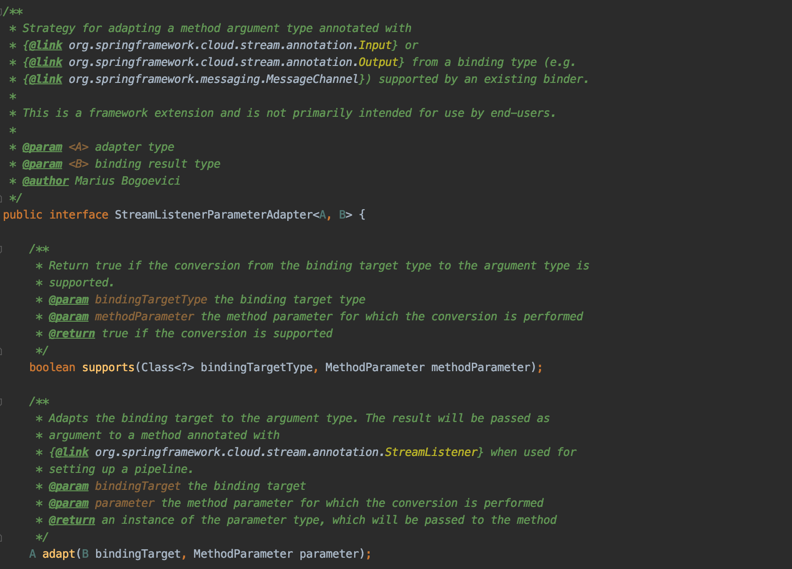
다음은 @StreamListener가 달린 Parameter를 처리하기 위한 Adapter 설정입니다.
이 메서드 내에서 KStream<String, YourPojoType>인 KStream의 Deserializing이 이루어집니다.
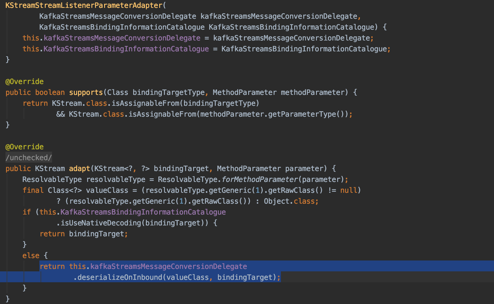
interface 구현체는 KStreamStreamListenerParameterAdapter 클래스입니다.
여기서도 useNativeDecoding 속성에 따라 코드가 분기가 됩니다.
default = false이기 때문에 아래 deserializeOnInbound 메서드가 호출됩니다.
8. deserializeOnInbound
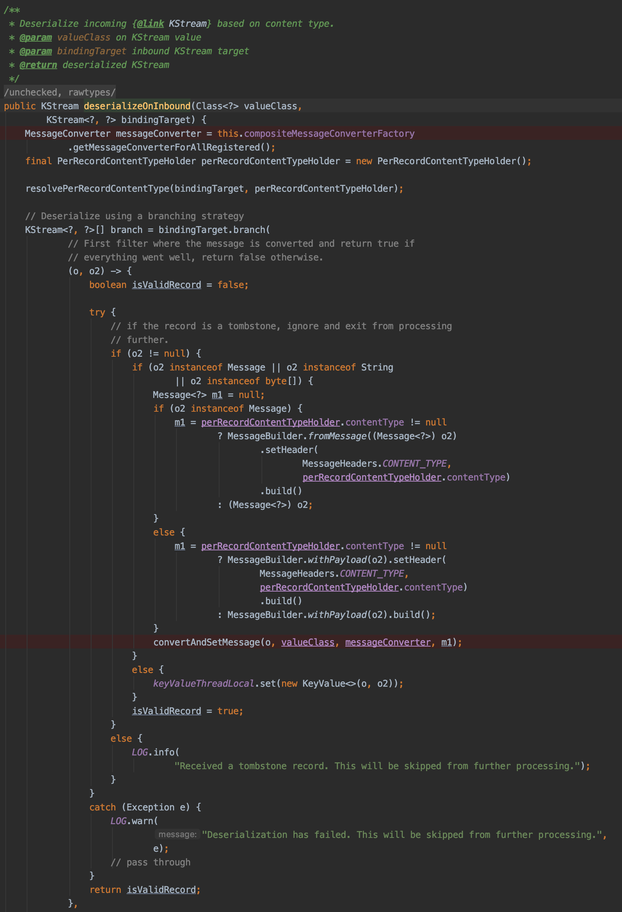
쭉~ 복잡한 코드가 보입니다.
그중에서도 볼것은 convertAndSetMessage 메서드입니다.
9. convertAndSetMessage
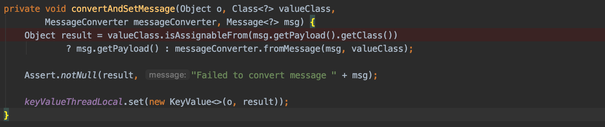
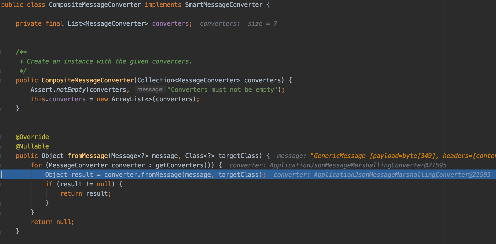
valueClass.isAssignableFrom() = false이므로 messageConverter.fromMessage() 메서드가 실행됩니다.
(여기서 사용되는 messageConverter는 여러가지 messageConvert를 모아둔 CompositeMessageConverter 가 사용됩니다.)
그중에서도 ApplicationJsonMessageMarshallingConverter를 사용하여 Json Data를 targetClass 타입으로 변환시킵니다.
그렇기 때문에 따로 Serde를 정의하지 않아도 Kafka Stream 라이브러리에서 알아서 잘 deserialize를 해주었습니다.
10. ApplicationJsonMessageMarshallingConverter.convertFromInternal
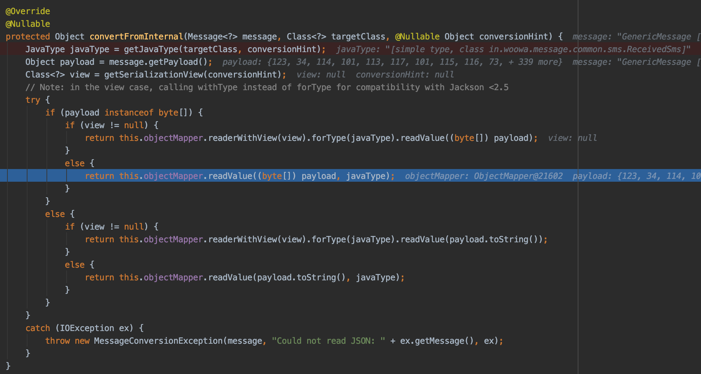
내부적으로는 Jackson 라이브러리의 objectMapper를 이용하여 deserialize 하는 코드가 있습니다.
요약
- spring kafka streams에 대한 별다른 설정을 안했다면 default로 작동할 것 입니다.
- useNativeDecoding = false로 설정 되어있을 것입니다.
- 위의 설정을 true로 하지 않았다면, default.key.serde, default.value.serde 설정은 먹히지 않습니다.
- 기본적으로 ByteArray valueSerde를 사용했을 것입니다.
- ApplicationJsonMessageMarshallingConverter에 의해 Json String이 파라미터에 정의한 타입에 맞게 알아서 잘 deserializing 해줬을 것입니다.
spring-cloud-stream-binder-kafka-streams 2.3.4
대부분의 코드 및 설정은 2.2.0 버전과 같습니다.
하지만 2.2.0을 default로 세팅해서 사용하시는 분들은 버전 업 후에는 잘 안되는것을 보실수 있습니다.
2.3.4에서 크게 바뀐 점 한 가지로 인해서 코드가 정상적으로 동작하지 않을 수 있게 되었습니다.
useNativeDecoding의 default가 true로 변경
1 | /** |
2.3.4의 ConsumerProperties의 useNativeDecoding 주석을 보면 여전히 Default: false로 표기되어 있습니다.
하지만 로직 상에서는 아무런 처리도 하지 않은 useNativeDecoding의 값이 true로 나오게 됩니다.
어디서 useNativeDecoding 값을 true로 바꿨을까요?
call tree를 찾아보니 다행히도 딱 세 군데에서만 호출하고 있습니다.
- KStreamBoundElementFactory
- KTableBoundElementFactory
- GlobalKTableBoundElementFactory
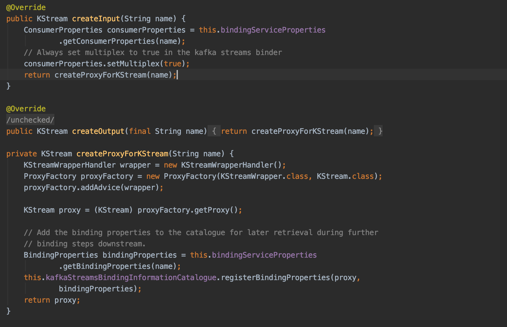
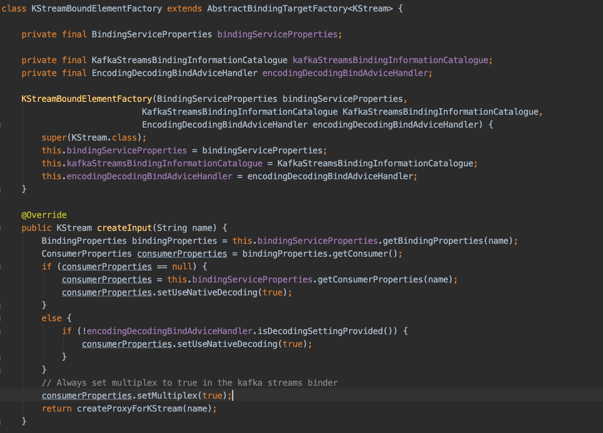
createInput 메서드에 집중해 보겠습니다.
createInput 메서드는 @StreamListener에 대한 post processing 단계에서 호출되는 코드입니다.
parameter로 들어오는 name은 input binding name입니다. (@StreamListener에 설정한 input name)
코드를 보면 consumerProperties의 useNativeDecoding을 무조건 true로 만들어 주고 있습니다.
(2.2.0 버전에서는 없던 코드가 추가되었습니다. useNativeDecoding이 default false였네요)
- KStreamBoundElementFactory
- KTableBoundElementFactory
- GlobalKTableBoundElementFactory
그래서 useNativeDecoding가 true가 되었다는 의미는
더이상 kafka에서 제공하는 Message Type으로 자동 deserializing이 되지 않고 개발자가 하나하나 deserializer을 지정해주어야 함을 의미합니다.
이를 해결하기 위한 방법은 2가지 있습니다.
- useNativeDecoding을 false로 설정한다. => 다시 kafka에서 제공하는 자동 deserialize 기능을 사용한다.
- binding input 별로 하나하나 deserializer를 지정한다.
해결방법을 보고나니 spring에서 왜 이렇게 코드를 변경했는지 알 것만 같습니다.
기존에는 별도로 지정하지 않게 되면 무조건 자동 deserialize가 되도록 했는데,
일부러 true로 바꾸었다는 것은 bindings 별로 deserializer를 각각 지정하도록 권장하는 것 같습니다.
1. useNativeDecoding을 false로 설정한다.
위의 코드를 잘 보게되면, encodingDecodingBindAdviceHandler.isDecodingSettingProvided() = false일때 true로 설정하게 합니다.
저 코드도 궁금해서 한번 들어가보았습니다.
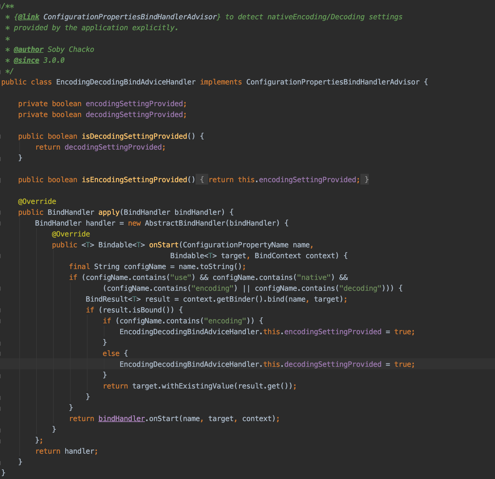
apply() 메서드를 보게되면 spring configuration properties를 모두 읽으면서 조건에 맞는 configName을 찾고 있습니다.
아마도 spring.cloud.streams.binding.[input-name].use-native-decoding 또는 encoding을 찾는가 봅니다.
저게 설정이 있으면 true로 변경되니 일단 원하는대로 설정을 해줘보겠습니다.
1 | spring.cloud.stream.bindings.message-topic.use-native-decoding=false |
이렇게 하면 use-native-decoding 설정이 false가 되어 2.2.0에서 제공하던 kafka의 자동 deserialize 기능이 동작해서 이전버전과 동일하게 동작합니다.
주의) use-native-decoding default 설정을 다시 전체 false로 하고 싶은데..
아쉽게도 binder 별로 설정이 적용되어 전체를 하기 어렵게 되었습니다.
귀찮더라도 하나하나 지정해 줍시다.spring.cloud.stream.bindings.message-topic1.use-native-decoding=false
spring.cloud.stream.bindings.message-topic2.use-native-decoding=false
2. binding input 별로 하나하나 deserializer를 지정한다.
이번 spring-kafka 버전에서 원하는대로 input 별로 하나하나 deserializer를 지정해 주겠습니다.
1 | class MessageSerde implements Serde<Message> { |
참고. JsonUtils는 제가 만든 Json 변환 Utils입니다.
1 | spring: |
주의) property의 depth가 깊어서 틀리지 않게 주의해야 합니다.
default key, value serde는 spring.cloud.stream.kafka.streams.binder.configuration 아래에 정의합니다.
binding input 별 key, value serde는 spring.cloud.stream.kafka.streams.bindings.[input-name].consumer 아래에 정의합니다.
추가내용
내용을 보면 useNativeEncoding 과 useNativeDecoding 의 default value가 true라고 알려주고 있습니다.
spring-cloud-stream의 backend가 무엇이냐에 따라 default 값이 달라지므로 주의해야할 것 같습니다.
(kafka에서는 default가 true이고 다른 backend는 default가 false일 수 있습니다.)